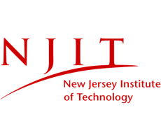

Our History
Theta Chi Fraternity was founded by two young idealistic cadets, Frederick Norton Freeman and Arthur Chase, at Norwich University in Vermont on the night of April 10, 1856.
About Our Fraternity

Our Chapter
The Epsilon Psi Chapter at New Jersey Institute of Technology was founded in 1963. We pride ourselves on our brotherhood and our ability to better one another. Get to know us!
Meet the Brothers
Our Mission
Theta Chi Fraternity exists to serve a need for young men of character, principles and ideals to associate with each other in order to grow, mature and develop through mutual assistance.
Rush/Join Our Chapter